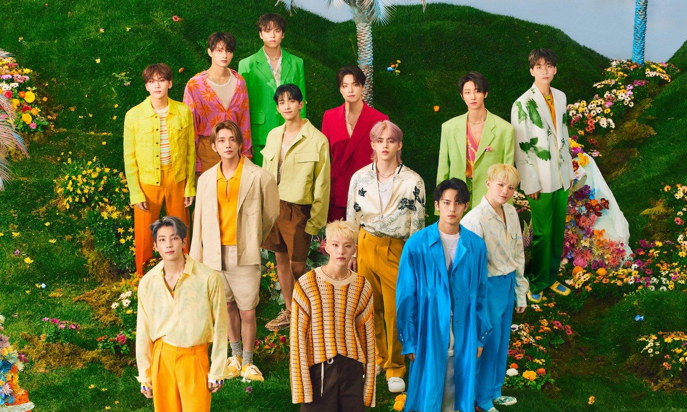

En esta página encontrarás información sobre el grupo de kpop Seventeen, sus integrantes, su historia y toda su música

Primero haremos una pequeña introducción
Seventeen es un grupo musical surcoreano formado por la empresa Pledis Entertainment y debutó en el año 2015. Está compuesto por trece integrantes, lo que lo convierte en uno de los grupos más numerosos dentro del K-pop. El grupo se caracteriza por dividirse en tres subunidades: hip-hop, vocal y performance, cada una especializada en distintos aspectos artísticos. Su estilo musical abarca géneros como el pop, el hip-hop y el EDM, y se destacan por su participación activa en la producción de sus propias canciones y coreografías. Su fandom oficial se conoce como CARAT, y han logrado una gran popularidad tanto en Corea del Sur como a nivel internacional.
Ahora, si quieres saber más sobre el grupo, sus integrantes, su historia o su música, puedes visitar las siguientes páginas: